This is the second post out of two that describes the usage of Radare2 to perform basic
tasks that relate to binary analysis. In the previous post a brief introduction to r2
was given, as well as a basic workflow working on command mode within r2.
In this post, we'll explore how to perform a basic analysis, operations and exploration
of a binary working on Visual Mode within r2.
Let's recap: r2 modes of operation.
As mentioned in the previous post, Radare2 has two modes of operation:
* Command Mode.
* Visual Mode.
Command mode is the default mode, here, all r2 commands are available.
Visual mode provides a set of different commands and this mode outputs the information
in a graphical way, same that is actually an interactive interface.
One of the most important things you have to remember is that there are commands that
perform the same action in both modes, but there are commands that, even when they
look the same, perform a total different thing between modes.
Finally, remember that, when in doubt, you can always use the -? command-.
Before we jump into it:
For this series of posts, we are going to use the following simple C program:
┌
│
│ int sum(int x, int y){
│ return x + y;
│ }
│
│ int mul(int x, int y){
│ return x * y;
│ }
│
│ int main(){
│ int a = 10, b = 5, c = 0, d = 0;
│ c = sum(a ,b);
│ d = mul(a, b);
│
│ if(c < d)
│ return c;
│ else
│ return d;
│
│ return 0xdefea7;
│ }
│
└
NOTE: In this series of posts we will be working with x86 binaries under the Linux OS so,
the code above was compiled with the following command:
┌ ┐
│ $ gcc -m32 -o post-sample post-sample.c │
└ ┘
Where -m32 is the compilation flag used to specify that we want gcc to compile our code
for x86 architecture (32 bits).
So we have now an x86 binary ready to be analyzed with r2.
Opening a binary with Radare2
Let's begin by opening our binary and run r2 analysis at once:
┌ ┐
│ $ r2 -A ./post-sample │
└ ┘
Remember that the fuse -A makes r2 to run an analysis of the binary, creating flags and
gathering useful information about the binary.
We should get the following result:
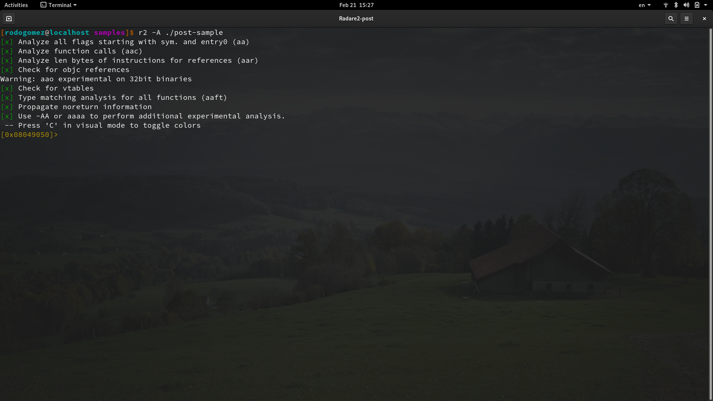
Working in Visual Mode.
Visual mode provides, as its name suggests, a more graphical way of displaying information.
In some way, visual mode provides a more user-friendly interface to work with when
analyzing binaries.
Something important you have to remember is that in visual mode not all the r2 commands
are available, and there are commands that do a different thing in visual mode compared
with command mode.
This mode does not provide only one interface to the user, instead, visual mode consists
of a set of print modes, also referred as panels.
Something that is a little bit confusing at the beginning, and that is important that
you understand, is that such print modes share some commands (those commands do the same
regardless the print mode), but there are other commands that does not do the same
action and even, there are commands that are present in some print modes but aren't in
others.
You can think of it as if each print mode was actually a kind of sub-mode within
visual mode.
The different print modes available in visual mode are:
↻ Hexdump panel → Disassembly panel → Debugger panel → Hexadecimal words dump panel →
Hex-less hexdump panel → Op analysis color map panel → Annotated hexdump panel ↻
The arrows represent the order of switching between print modes.
There is a special print mode, full of different functionalities and options, and it's
almost like if it was actually a third mode in r2, called Panels view, (which is
the print mode that I personally use the most) but officially it is another print mode
within visual mode, we'll explore this special print mode last.
You can switch between print modes, but before explaining that, let's switch to Visual
mode first.
Switching to visual mode.
At this point, we are currently in command mode. In order to change to visual mode we
can use the -V command- (note the uppercase):
┌ ┐
│ [0x08049050]> V │
└ ┘
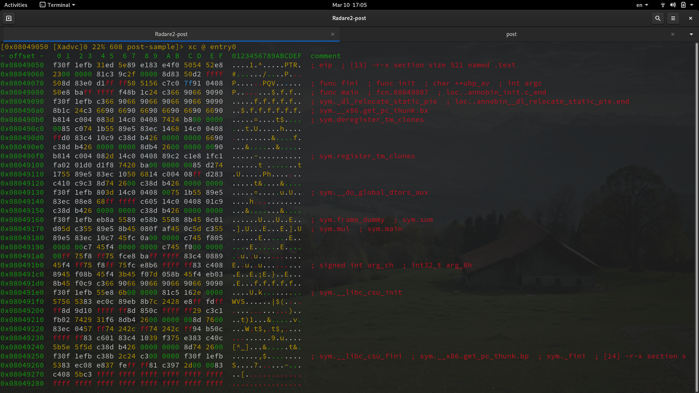
Now we are in visual mode. The default print mode that you see once you enter in visual
mode is an hex dump view of the current seek.
You can switch to other print modes using either the -p command- or -P
command-:
Disassembly panel:
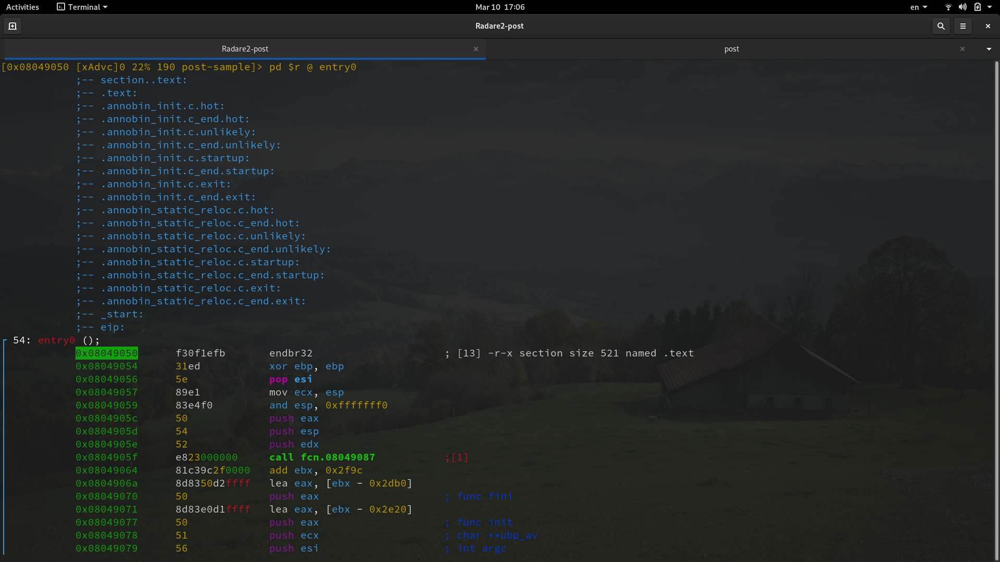
Color map panel:
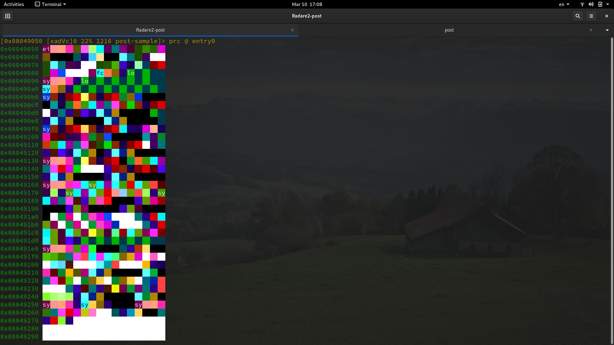
By now, let's explore our workflow within the disassembly panel.
Exploring the binary.
At this point, our current seek is the very beginning of our binary code, we can move
around and explore the disassembled code using the arrow keys or h, j, k, and l keys,
same as the ones you use in the Vim text editor.
Moving using such keys allows you to navigate the disassembled code but only one line
at a time.
You can go directly to specific locations, like a specific function or a specific part
of the binary if you know its location within the binary, by using the flag of such
function or binary location using the _ command.
Let's supose you want to go to the main function, just type _ and a list of r2 flags
will be displayed:
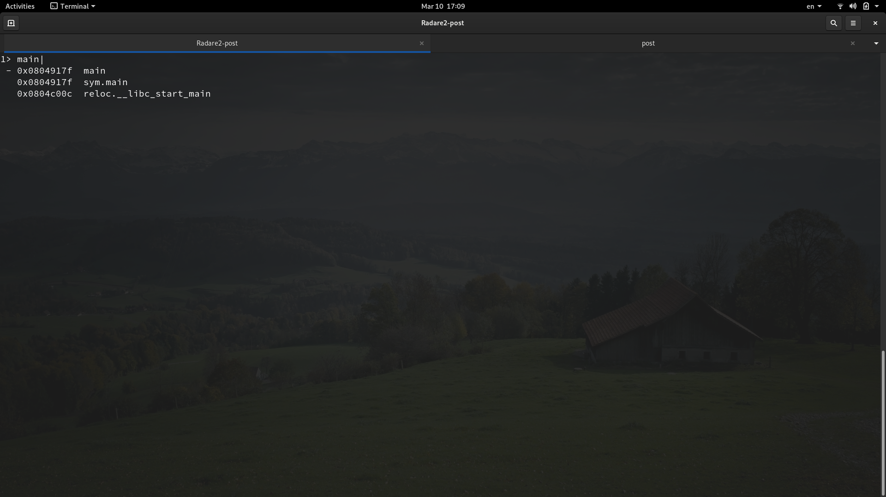
Then just type main and press ENTER.
Now our current seek is the location of main:
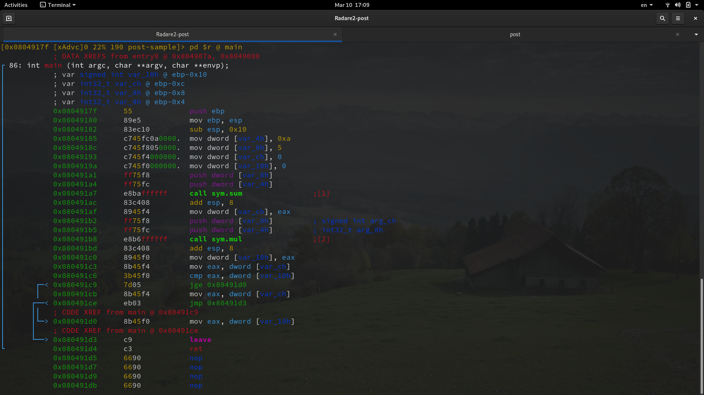
This way, the _ command is useful to search for specific functions/locations within our
binary.
The view management.
View management is a functionality that is only available if you are NOT in Panels
view (but it's available in all the other print modes).
The view management provides a set of options and functionalities that can be applied
to the functions of our binary.
This functionality is accessed using the -v command-:
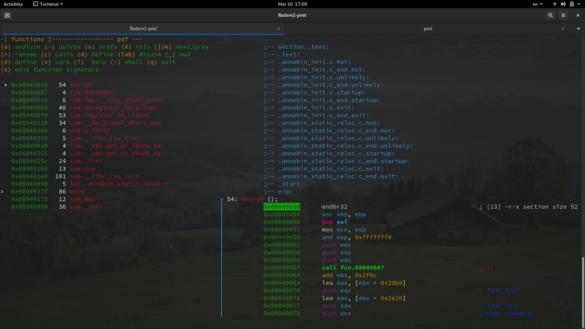
As you can see, a list of all the functions of our binary is displayed and a preview
of the disassembled code of the selected function is showed as well.
Using the up and down arrow keys, or j and k you can move between functions (see how
an * symbol works as a cursor when moving around between functions in the list).
Using the right arrow key, or l key, specific options (that applies to the current
selected function) are displayed that relates to actions like add, rename, type and
so on.
For a simple binary analysis, the options that I found useful the most are:
* Rename a function.
* The calls option.
In order to ilustrate this functionalities, let's rename our functions sum and mul.
Remember that r2 found them when it ran the analysis and assigned them a flag. That
way our functions are referenced by the flags sym.sum and sym.mul.
If we want to rename sym.sum function, we move the cursor selecting it, and press
r, after that we'll be asked to write the new name:
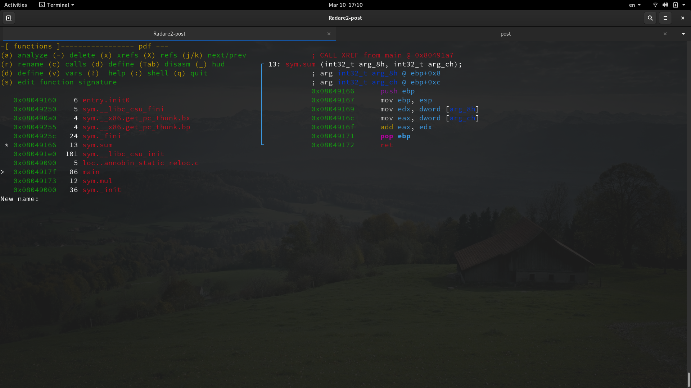
Let's rename it as sum and then press ENTER.
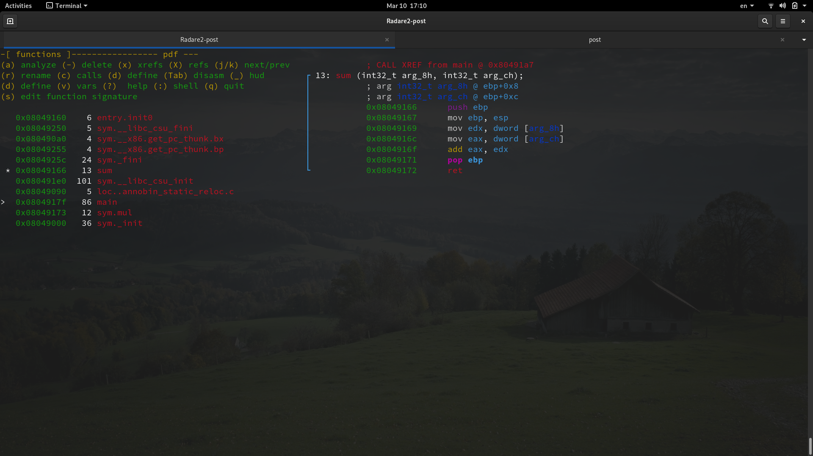
And the same applies to sym.mul:
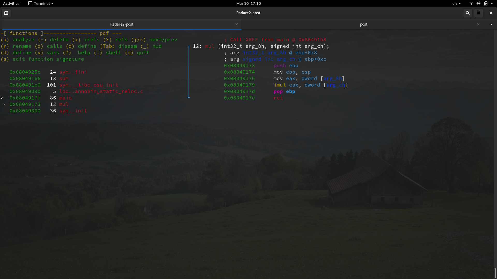
In the other hand, the calls option provides very useful information about the
selected function, you can use this function just by typing c:
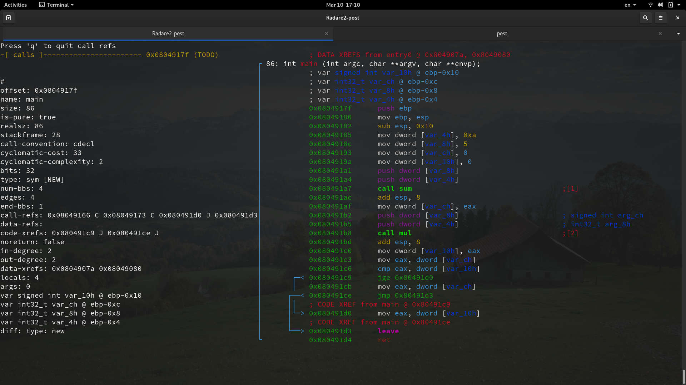
Some of the most useful information is:
* Call-convention: Tells us the calling convection that the code is using, this is
important when reversing a binary.
* locals: Tells us how many local variables are in the function (NOTE: the number of
local variables may be different than the ones that were used in the source code, this
is because the generated assembly code from the compiler may create more or less local
variables depending on factors like optimizations at compile time.)
* args: Tells us how many arguments there are in the function signature.
Once you are done with the view management, you can exit from there by pressing
q.
r2 commands within visual mode.
As said before, when you are in visual mode, not all the r2 commands are available,
at least not directly. But such limitation is not that real. There is a way to
execute all the commands that are available in command mode being in visual mode.
When in visual mode, in any of the print modes, you can get an "r2 terminal" to
execute command mode commands by pressing : (semicolon)
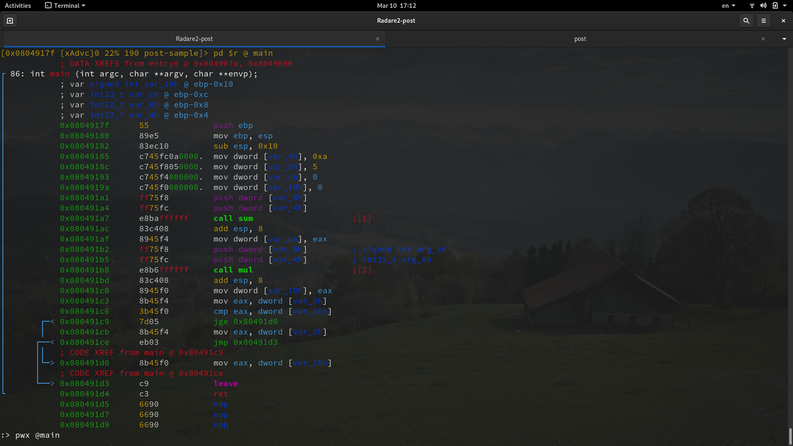
As you can see, a promt is displayed. Here you can type and execute any of the commands
that are present in command mode.
This is really useful because, as long as you use Radare2, you'll notice that you need
to hex dump an specific location in memory, or print the contents of some location
stored in a register and so on.
When you start running commands in this promt, you may notice that the interface suffer
a scrolling-up and you lose your print mode, don't worry.!, once you are done with
your r2 commands, just press ENTER (without any command on the promt) and the print
mode is restored as it was before switching to the promt.
At this point, you should be able to navigate the disassembled code of any binary,
rename functions, gather information, and explore more options in visual mode. But
that's not the end of this post, let's now explore my favorite print mode, let's
explore Panels view.
Panels view.
Panels view provides an interface with splitted windows, each window is called a panel,
and each of those panels can show different print modes or different r2 command's
output at the same time.
That way, you can have a main panel that shows the disassembled code, another one to
see the registers, another one to display the stack and so on.
There are basically 2 ways to switch to panels view, depending on your current r2 mode:
Switching from visual mode to panels view.
To switch to panels view when you are currently in any print mode, within visual mode
of course, just use the -! command-.
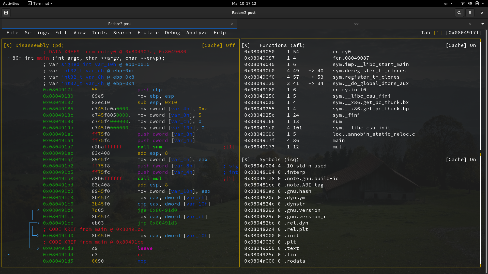
Switching from command mode to panels view.
To switch to panels view when you are currently in command mode, just use the -v
command-(Note the lower case).
That way, if you are in command mode, using the -v command- you switch to panels view,
whereas using the -V command- change to visual mode.
Working in panels view.
Panels view shares some functionalities with all the other print modes, but one that
is not present is view management, that way if you need something from view
management you'll need to switch to any other print mode.
If you need to execute r2 commands, you can do it the same way as in any other print
mode, by using the -: command-.
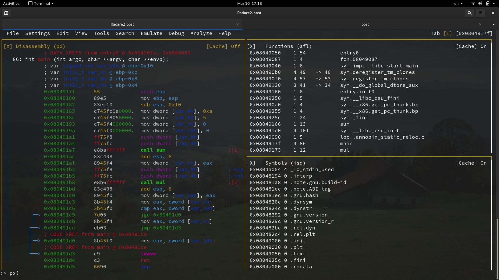
When I first ever launched this view, the default interface displayed 3 different
panels, the bigger one showed the disassembled code, and the other ones showed an
hex dum of the stack and the registers.
Being honest, at this point I'm not sure if those are the default panels, but don't
worry, we'll explore how to customize them.
You can move between panels using the TAB key.
As you can see, there are some options at the top of the window, you can access
such options using the -m command-. You can explore the options available
moving with the arrow keys or h, j, k and l.
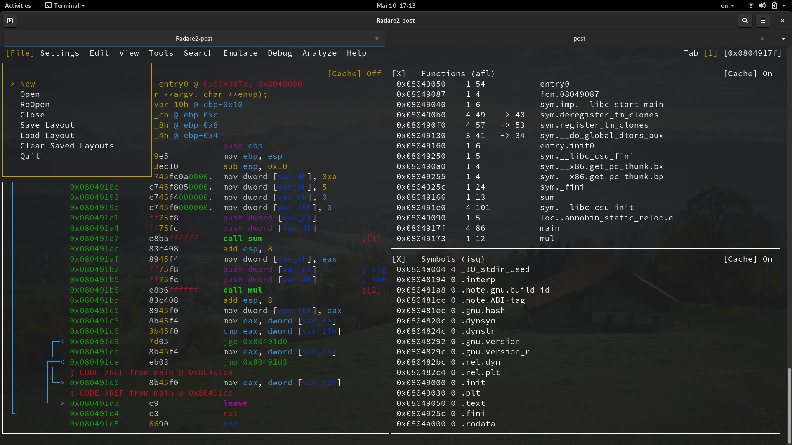
If you want to search and go to an specific function in the disassembled code, you
can do it the same way as in other print mode, using the -_ command-.
Customizing the panels.
Let's customize the two smaller panels. One way to achieve this is by moving to the
desired panel and press the DEL key:
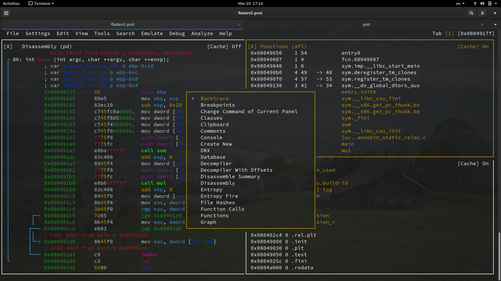
A menu is displayed with multiple predefined options, you can choose from them and
just press ENTER to make the selection.
All this predefined views use an specific fixed r2 command, same that is visible
at the top of each panel, but this is not the only way to customize the panels.
You can provide to any panel your own custom r2 command by using the -e
command-, just move to the desired panel and use the command:
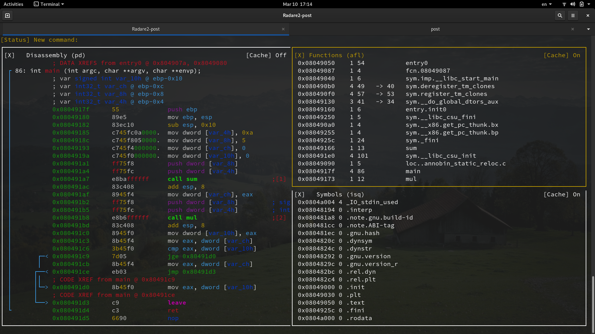
At the top of the window, a promt will be displayed asking you to write your r2
command, that way, whatever the output of that command is, it will be displayed in
the selected panel.
I personally use those two panels to display the stack and the registers, respectively.
The command I use to display the stack is:
┌ ┐
│ pxW @esp │
└ ┘
px belongs to the print hexadecimal commands. W specifies the size of the hex
dump and stands for word size. Notice that in radare2 a word is 32 bits. And W is
uppercase, which specifies that the output will be displayed one word per line.
And for the registers I just use the predefined one, using the DEL key.
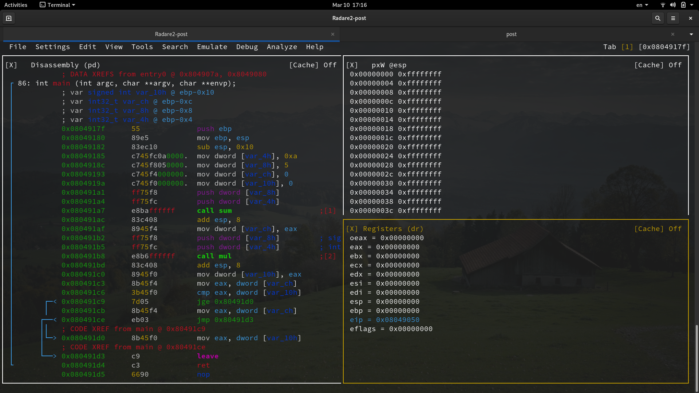
Bonus: Graph view.
Graph view displays the disassembled code showing the branches (if any) and a call
graph view as well.
When in visual mode, in any print mode, you can go to graph view using the
SPACE key.
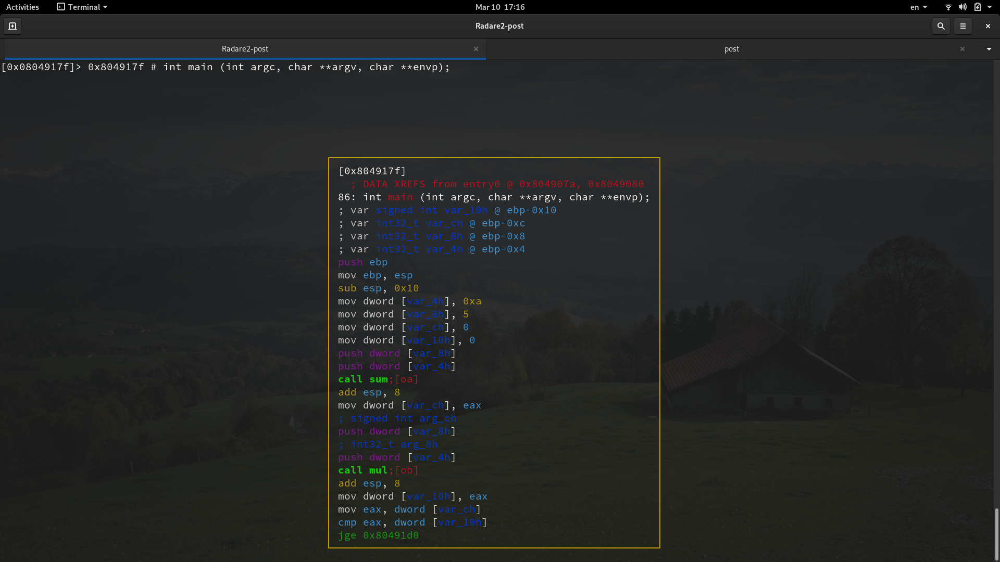
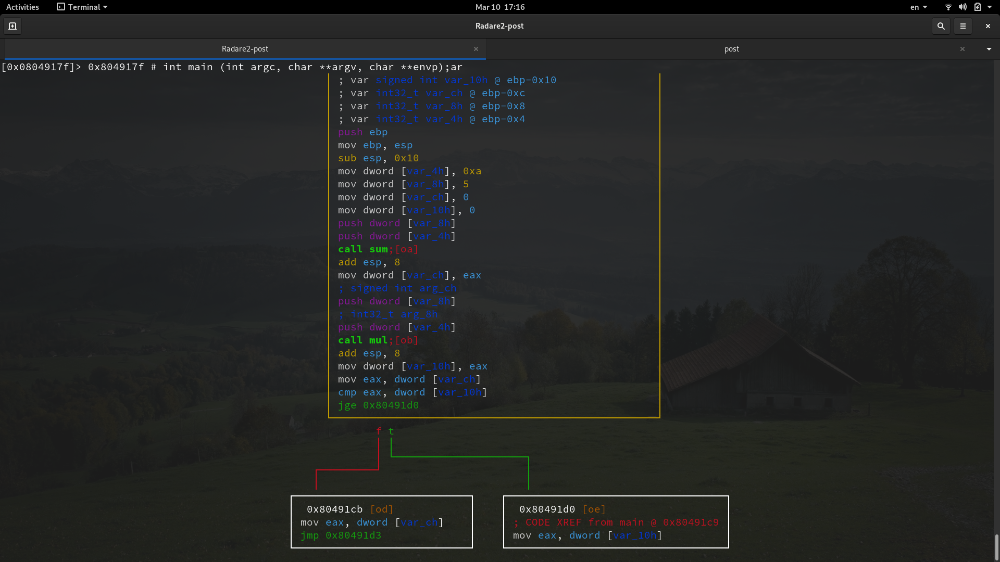
The displayed disassembled code depends on the current seek, if you are located at
main in the binary, then the disassembled code will be from main.
You can move around the graph view using the arrow keys and h, j, k and l
keys.
This view helps you see in a more ilustrative interface the branches created by if
statements, switch cases and other conditional and non-conditional jumps in
code.
Getting help.
Regardless the current mode you are in, you can use the -? command to get help.
Conclusions.
Now you should be able to perform a basic binary analysis using both command mode
and visual mode. From here, you can dedice which mode, or which print mode, is
better for you.
Notice that knowing how to use tools for binary analysis, such as Radare2, is just
useful if you have previous knowledge about concepts like assembly, computer
architecture and even programming. In future posts, I'll be exploring some stuff
about those concepts that migth be helpful for everyone interested in this areas.
References.
[Radare2 Official Book.]
[Cutter Github Repository.]
[Rizin Github Repository.]